9 Heierarchical Models
9.1 Gamma Distributions
We will use gamma distributions for some of our priors in this chapter. Gamma distributions have support \((0,\infty)\) and are skewed to the right. Both R and JAGS paramterize the gamma distributions with two parameters called shape and rate.
gf_dist("gamma", shape = 2, rate = 3, color = ~"Gamma(2, 3)") %>%
gf_dist("gamma", shape = 4, rate = 3, color = ~"Gamma(4, 3)") %>%
gf_dist("gamma", shape = 2, rate = 6, color = ~"Gamma(2, 6)") %>%
gf_dist("gamma", shape = 4, rate = 6, color = ~"Gamma(4, 6)") %>%
gf_labs(title = "Some Gamma distributions")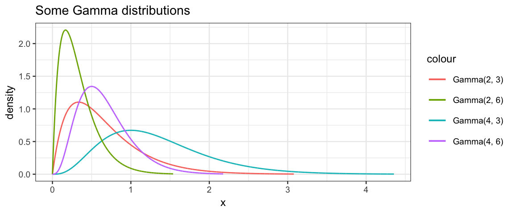
The mean, mode, standard deviation can be calcuated from the shape \(s\) and rate \(r\) as follows:
\[\begin{align*}
\mu &= \frac{s}{r}
\\
\omega &= \frac{s−1}{r} \qquad (s > 1)
\\
\sigma & = \frac{\sqrt{s}}{r}
\end{align*}\]
In addition, the scale parameter (1/rate) is sometimes used in place
of the rate parameter.
The gamma_params() function will automate conversion between various
parameterizations. It works just like beta_params() that we have seen before.
gamma_params(mode = 15, sd = 10, plot = TRUE)
| shape | rate | scale | mode | mean | sd |
|---|---|---|---|---|---|
| 4 | 0.2 | 5 | 15 | 20 | 10 |
As the shape parameter gets larger and larger, the gamma distribution becomes less and less skewed (and more and more like a normal distribution):
gf_dist("gamma", shape = 25, rate = 5, color = ~"Gamma(25, 5)") %>%
gf_dist("norm", mean = 5, sd = 1, color = ~"Norm(5, 1)")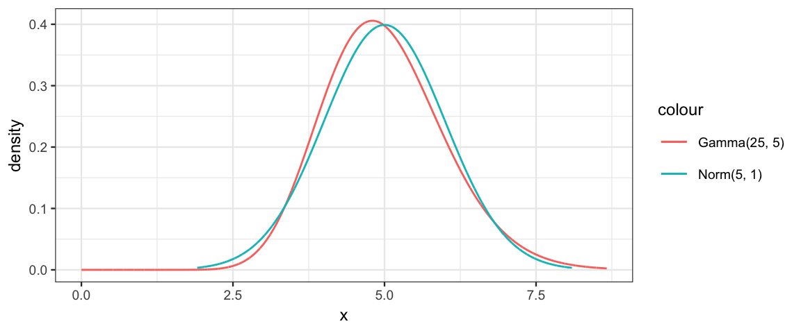
gf_dist("gamma", shape = 100, rate = 5, color = ~"Gamma(25, 5)") %>%
gf_dist("norm", mean = 20, sd = 2, color = ~"Norm(5, 1)")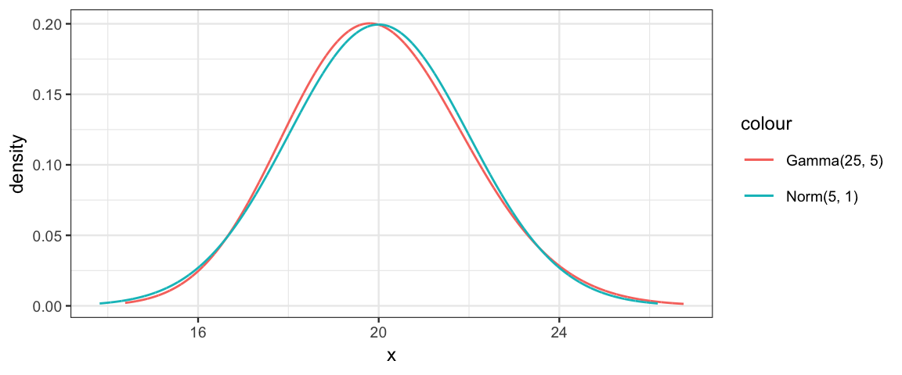
9.2 One coin from one mint

9.3 Multiple coins from one mint
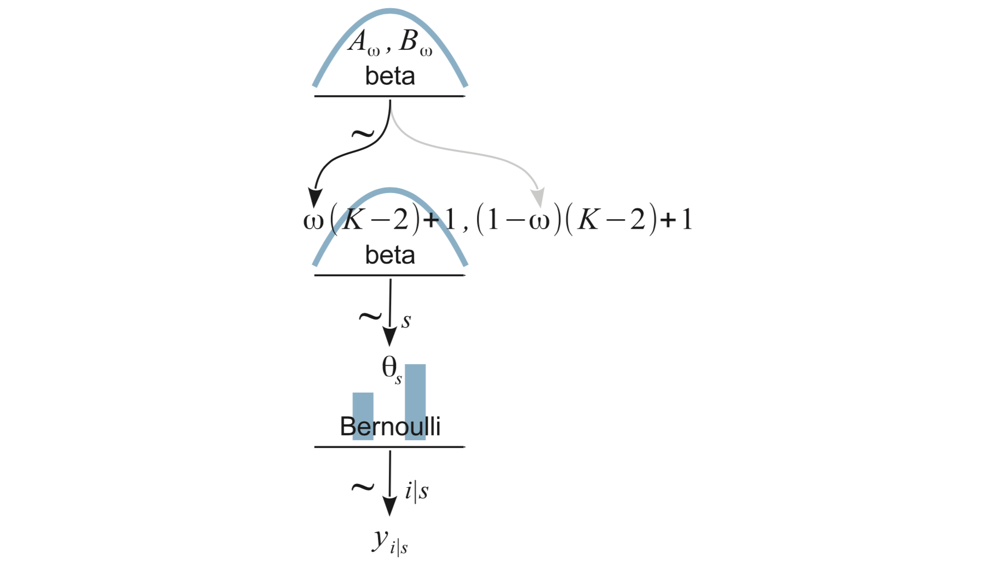
9.4 Multiple coins from multiple mints

9.5 Therapeutic Touch
The study is described in the text. The article reporting on the study can be found at https://jamanetwork.com/journals/jama/fullarticle/187390. Here’s the abstract:
9.5.1 Abstract
Context.— Therapeutic Touch (TT) is a widely used nursing practice rooted in mysticism but alleged to have a scientific basis. Practitioners of TT claim to treat many medical conditions by using their hands to manipulate a “human energy field” perceptible above the patient’s skin.
Objective.— To investigate whether TT practitioners can actually perceive a “human energy field.”
Design.— Twenty-one practitioners with TT experience for from 1 to 27 years were tested under blinded conditions to determine whether they could correctly identify which of their hands was closest to the investigator’s hand. Placement of the investigator’s hand was determined by flipping a coin. Fourteen practitioners were tested 10 times each, and 7 practitioners were tested 20 times each.
Main Outcome Measure.— Practitioners of TT were asked to state whether the investigator’s unseen hand hovered above their right hand or their left hand. To show the validity of TT theory, the practitioners should have been able to locate the investigator’s hand 100% of the time. A score of 50% would be expected through chance alone.
Results.— Practitioners of TT identified the correct hand in only 123 (44%) of 280 trials, which is close to what would be expected for random chance. There was no significant correlation between the practitioner’s score and length of experience (r=0.23). The statistical power of this experiment was sufficient to conclude that if TT practitioners could reliably detect a human energy field, the study would have demonstrated this.
Conclusions.— Twenty-one experienced TT practitioners were unable to detect the investigator’s “energy field.” Their failure to substantiate TT’s most fundamental claim is unrefuted evidence that the claims of TT are groundless and that further professional use is unjustified.
9.5.2 Data
library(mosaic)
head(TherapeuticTouch, 3)| y | s |
|---|---|
| 1 | S01 |
| 0 | S01 |
| 0 | S01 |
gf_barh(s ~ ., data = TherapeuticTouch, fill = ~ factor(y))
9.5.3 A heierarchical model
Big ideas:
The ten trials for each subject are a sample from the many trials that could have been done.
- distribution of results: \({\sf Bern}(\theta_s)\) – each subject has a potentially different \(\theta_s\).
The subjects themselves are just a sample from all of the TT practitioners that could have been in the study.
So the \(\theta_s\) values are a sample from a distribution of \(\theta\) values for all TT practititioners and tell us something about that distribution.
We will assume a beta distribution for this, where the parameters are unknown and estimated from the data.
Use the data to estimate both the individual level \(\theta_s\) values and the group level parameters of the beta distribution.
Parameterization of the beta distribution for \(\theta_s\).
We are primarily interested in the mean or mode of this distribution (typical value of \(\theta\) for TT practitioner).
Many combinations of shape parameters give the same mean (or mode), and they are highly correlated. For example, \({\sf Beta}(2,4)\), \({\sf Beta}(20,40)\), and \({\sf Beta}(200,400)\) all have a mean of 1/3.
We will parameterize this Beta distribution with mode (\(\omega\)), and concentration (\(\kappa\))
We will need to convert mode and concentration into the two shape parameters, since JAGS and R use the two shape parameters.
\[\begin{align} \alpha &= \omega (\kappa - 2) + 1\\ \beta &= (1 - \omega) (\kappa - 2) + 1) \end{align}\]
\(\omega\) and \(\kappa\) will need priors
- \(\omega\): Beta
- \(\kappa - 2\): Gamma (because \(\kappa >2\))
Putting this altogether we have the following picture:
Now we code it up for JAGS.
gamma_params(mean = 1, sd = 10)| shape | rate | scale | mode | mean | sd |
|---|---|---|---|---|---|
| 0.01 | 0.01 | 100 | NA | 1 | 10 |
touch_model <- function() {
for (i in 1:Ntotal) {
y[i] ~ dbern(theta[s[i]])
}
for (s in 1:Nsubj) {
theta[s] ~ dbeta(omega * (kappa - 2) + 1, (1 - omega) * (kappa - 2) + 1)
}
omega ~ dbeta(1, 1)
kappa <- kappaMinusTwo + 2
kappaMinusTwo ~ dgamma(0.01, 0.01) # mean = 1, sd = 10
}set.seed(1234)
TouchData <- list(
Ntotal = nrow(TherapeuticTouch),
Nsubj = length(unique(TherapeuticTouch$s)),
y = TherapeuticTouch$y,
# must convert subjects to sequence 1:Nsubj
s = as.numeric(factor(TherapeuticTouch$s))
)
touch_jags <-
jags(
data = TouchData,
model = touch_model,
parameters.to.save = c("theta", "kappa", "omega"),
)touch_jags## Inference for Bugs model at "/var/folders/py/txwd26jx5rq83f4nn0f5fmmm0000gn/T//RtmpClV83u/modelaef323d32c02.txt", fit using jags,
## 3 chains, each with 2000 iterations (first 1000 discarded)
## n.sims = 3000 iterations saved
## mu.vect sd.vect 2.5% 25% 50% 75% 97.5% Rhat
## kappa 52.286 54.028 8.932 20.025 34.399 65.489 210.966 1.056
## omega 0.439 0.035 0.367 0.416 0.439 0.462 0.508 1.004
## theta[1] 0.363 0.088 0.175 0.305 0.369 0.426 0.517 1.016
## theta[2] 0.384 0.084 0.208 0.331 0.389 0.444 0.536 1.015
## theta[3] 0.409 0.081 0.241 0.358 0.414 0.463 0.564 1.005
## theta[4] 0.411 0.083 0.236 0.357 0.415 0.467 0.564 1.020
## theta[5] 0.409 0.080 0.244 0.358 0.411 0.461 0.563 1.010
## theta[6] 0.410 0.082 0.235 0.359 0.414 0.464 0.562 1.006
## theta[7] 0.409 0.080 0.244 0.359 0.412 0.461 0.560 1.019
## theta[8] 0.410 0.080 0.243 0.360 0.413 0.462 0.565 1.012
## theta[9] 0.407 0.080 0.247 0.356 0.410 0.459 0.561 1.008
## theta[10] 0.409 0.081 0.238 0.358 0.413 0.463 0.559 1.008
## theta[11] 0.433 0.077 0.276 0.384 0.433 0.483 0.588 1.004
## theta[12] 0.433 0.081 0.278 0.383 0.434 0.485 0.593 1.005
## theta[13] 0.434 0.078 0.280 0.385 0.434 0.484 0.587 1.002
## theta[14] 0.432 0.080 0.272 0.380 0.432 0.482 0.593 1.001
## theta[15] 0.433 0.080 0.275 0.381 0.434 0.484 0.590 1.004
## theta[16] 0.457 0.080 0.300 0.408 0.454 0.504 0.624 1.002
## theta[17] 0.456 0.079 0.295 0.406 0.453 0.506 0.621 1.002
## theta[18] 0.454 0.081 0.295 0.401 0.453 0.504 0.626 1.003
## theta[19] 0.457 0.078 0.313 0.407 0.454 0.505 0.618 1.001
## theta[20] 0.455 0.080 0.298 0.403 0.452 0.508 0.612 1.003
## theta[21] 0.457 0.082 0.296 0.404 0.455 0.510 0.621 1.005
## theta[22] 0.457 0.079 0.311 0.405 0.454 0.507 0.625 1.003
## theta[23] 0.480 0.083 0.328 0.425 0.474 0.529 0.658 1.008
## theta[24] 0.482 0.083 0.327 0.427 0.476 0.531 0.660 1.003
## theta[25] 0.506 0.088 0.351 0.446 0.497 0.562 0.691 1.008
## theta[26] 0.507 0.088 0.354 0.446 0.498 0.560 0.700 1.003
## theta[27] 0.505 0.087 0.355 0.445 0.495 0.559 0.695 1.008
## theta[28] 0.527 0.093 0.374 0.460 0.517 0.581 0.735 1.008
## deviance 378.963 5.156 368.591 375.437 379.284 382.411 388.755 1.010
## n.eff
## kappa 44
## omega 1100
## theta[1] 210
## theta[2] 190
## theta[3] 970
## theta[4] 270
## theta[5] 500
## theta[6] 1100
## theta[7] 180
## theta[8] 510
## theta[9] 650
## theta[10] 710
## theta[11] 1700
## theta[12] 710
## theta[13] 3000
## theta[14] 3000
## theta[15] 3000
## theta[16] 3000
## theta[17] 1600
## theta[18] 3000
## theta[19] 3000
## theta[20] 3000
## theta[21] 1000
## theta[22] 1800
## theta[23] 510
## theta[24] 1300
## theta[25] 260
## theta[26] 680
## theta[27] 250
## theta[28] 300
## deviance 220
##
## For each parameter, n.eff is a crude measure of effective sample size,
## and Rhat is the potential scale reduction factor (at convergence, Rhat=1).
##
## DIC info (using the rule, pD = var(deviance)/2)
## pD = 13.2 and DIC = 392.1
## DIC is an estimate of expected predictive error (lower deviance is better).What do we learn from a quick look at this output?
- The Rhat values look good
- The autocorrelation varies from parameter to parameter. For some parameters, it looks like it will take a much longer run to get a large effective sample size.
So let’s do a larger run.
touch_jags <-
jags.parallel(
data = TouchData,
model = touch_model,
parameters.to.save = c("theta", "kappa", "omega"),
n.burnin = 1000,
n.iter = 41000,
n.chains = 5,
n.thin = 10,
jags.seed = 54321
) touch_jags## Inference for Bugs model at "touch_model", fit using jags,
## 5 chains, each with 41000 iterations (first 1000 discarded), n.thin = 10
## n.sims = 20000 iterations saved
## mu.vect sd.vect 2.5% 25% 50% 75% 97.5% Rhat
## kappa 55.710 55.745 8.632 21.295 37.091 68.780 210.357 1.001
## omega 0.435 0.037 0.362 0.412 0.436 0.460 0.508 1.001
## theta[1] 0.360 0.087 0.169 0.305 0.367 0.422 0.513 1.001
## theta[2] 0.384 0.084 0.206 0.332 0.389 0.441 0.536 1.001
## theta[3] 0.407 0.080 0.240 0.357 0.410 0.460 0.560 1.001
## theta[4] 0.407 0.080 0.239 0.357 0.410 0.461 0.560 1.001
## theta[5] 0.408 0.080 0.240 0.359 0.411 0.460 0.561 1.001
## theta[6] 0.407 0.080 0.240 0.357 0.410 0.459 0.561 1.001
## theta[7] 0.407 0.080 0.241 0.358 0.410 0.459 0.559 1.001
## theta[8] 0.407 0.080 0.238 0.357 0.411 0.459 0.560 1.001
## theta[9] 0.408 0.080 0.241 0.358 0.411 0.460 0.563 1.001
## theta[10] 0.408 0.080 0.242 0.358 0.411 0.460 0.563 1.001
## theta[11] 0.431 0.079 0.274 0.382 0.431 0.481 0.591 1.001
## theta[12] 0.430 0.079 0.271 0.380 0.430 0.480 0.588 1.001
## theta[13] 0.431 0.079 0.272 0.381 0.430 0.481 0.588 1.001
## theta[14] 0.430 0.078 0.276 0.380 0.430 0.479 0.590 1.001
## theta[15] 0.431 0.078 0.274 0.382 0.432 0.481 0.590 1.001
## theta[16] 0.454 0.080 0.300 0.402 0.451 0.503 0.622 1.001
## theta[17] 0.454 0.080 0.303 0.402 0.451 0.503 0.624 1.001
## theta[18] 0.455 0.080 0.301 0.403 0.451 0.505 0.624 1.001
## theta[19] 0.454 0.080 0.301 0.402 0.452 0.502 0.626 1.001
## theta[20] 0.454 0.079 0.300 0.403 0.452 0.502 0.620 1.001
## theta[21] 0.455 0.080 0.303 0.403 0.452 0.504 0.621 1.001
## theta[22] 0.455 0.080 0.302 0.402 0.451 0.504 0.622 1.001
## theta[23] 0.477 0.083 0.327 0.422 0.471 0.527 0.659 1.001
## theta[24] 0.476 0.082 0.328 0.422 0.470 0.526 0.657 1.001
## theta[25] 0.501 0.087 0.349 0.441 0.492 0.553 0.691 1.001
## theta[26] 0.500 0.086 0.351 0.441 0.493 0.551 0.691 1.001
## theta[27] 0.500 0.086 0.350 0.441 0.493 0.553 0.691 1.001
## theta[28] 0.525 0.093 0.370 0.460 0.514 0.581 0.733 1.001
## deviance 379.089 5.187 368.486 375.671 379.322 382.640 388.787 1.001
## n.eff
## kappa 8100
## omega 8900
## theta[1] 19000
## theta[2] 20000
## theta[3] 20000
## theta[4] 19000
## theta[5] 8400
## theta[6] 20000
## theta[7] 8100
## theta[8] 12000
## theta[9] 6900
## theta[10] 13000
## theta[11] 20000
## theta[12] 20000
## theta[13] 10000
## theta[14] 20000
## theta[15] 20000
## theta[16] 20000
## theta[17] 20000
## theta[18] 20000
## theta[19] 20000
## theta[20] 20000
## theta[21] 20000
## theta[22] 18000
## theta[23] 12000
## theta[24] 15000
## theta[25] 9700
## theta[26] 20000
## theta[27] 9900
## theta[28] 20000
## deviance 20000
##
## For each parameter, n.eff is a crude measure of effective sample size,
## and Rhat is the potential scale reduction factor (at convergence, Rhat=1).
##
## DIC info (using the rule, pD = var(deviance)/2)
## pD = 13.5 and DIC = 392.5
## DIC is an estimate of expected predictive error (lower deviance is better).touch_mcmc <- as.mcmc(touch_jags)
plot_post(touch_mcmc[, "omega"], comparison_value = 0.5)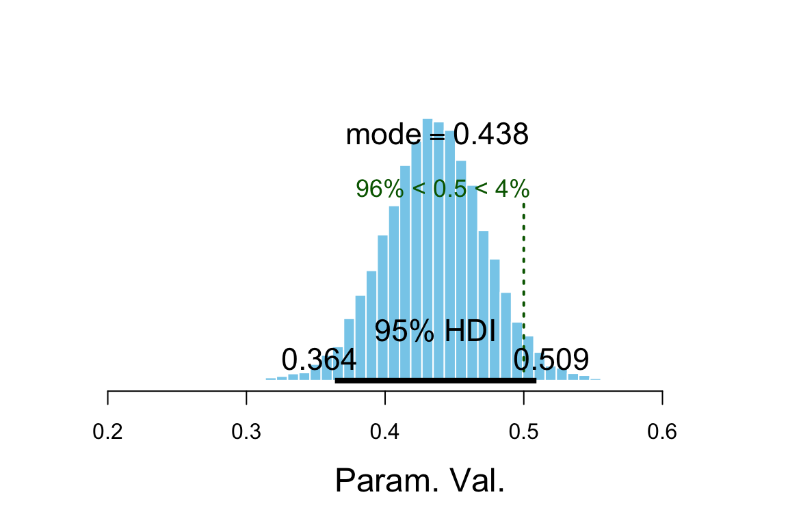
## $posterior
## ESS mean median mode
## var1 14724 0.4354 0.4357 0.4379
##
## $hdi
## prob lo hi
## 1 0.95 0.3638 0.5091
##
## $comparison
## value P(< comp. val.) P(> comp. val.)
## 1 0.5 0.9597 0.04025diag_mcmc(touch_mcmc, par = "omega")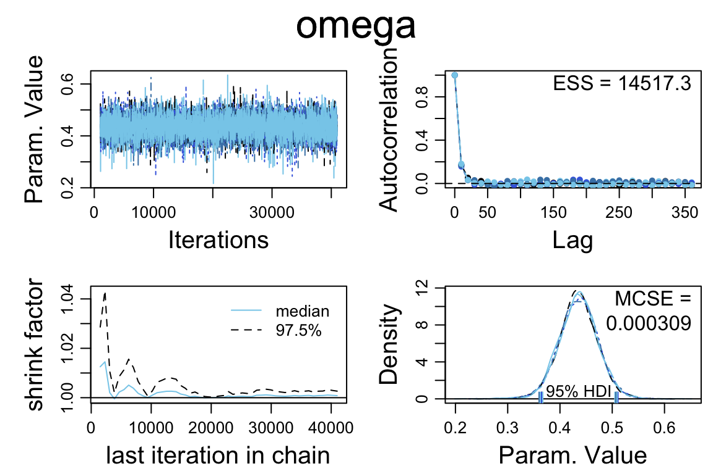
diag_mcmc(touch_mcmc, par = "kappa")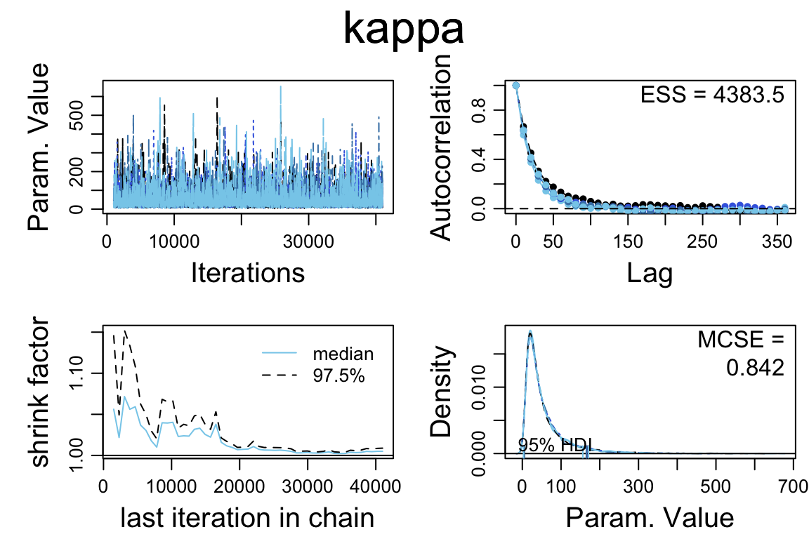
diag_mcmc(touch_mcmc, par = "theta[1]")
mcmc_pairs(touch_mcmc, pars = c("omega", "kappa"))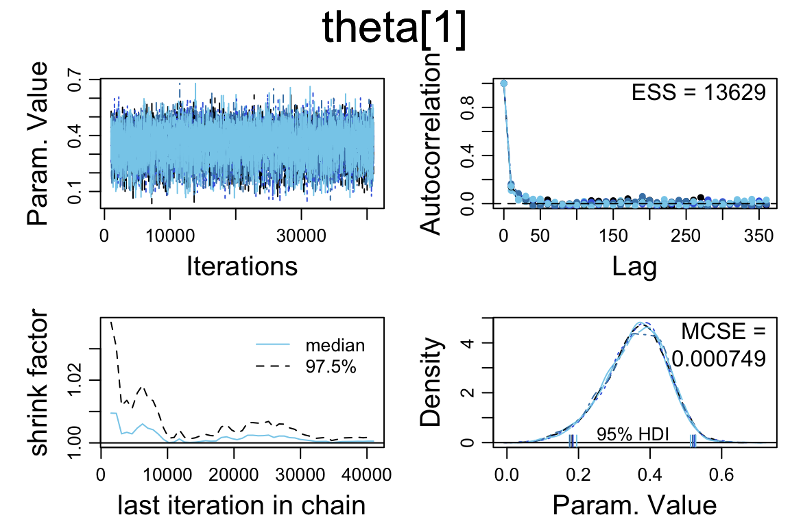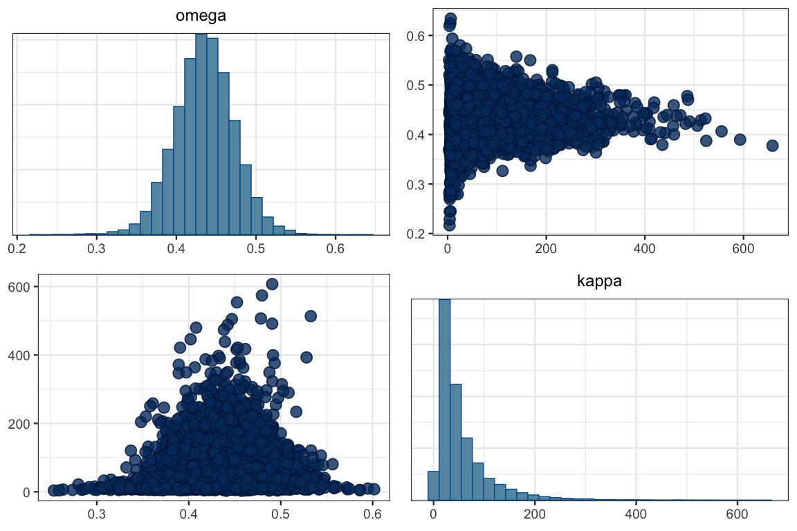
GGally::ggpairs(posterior(touch_jags) %>% select(omega, kappa))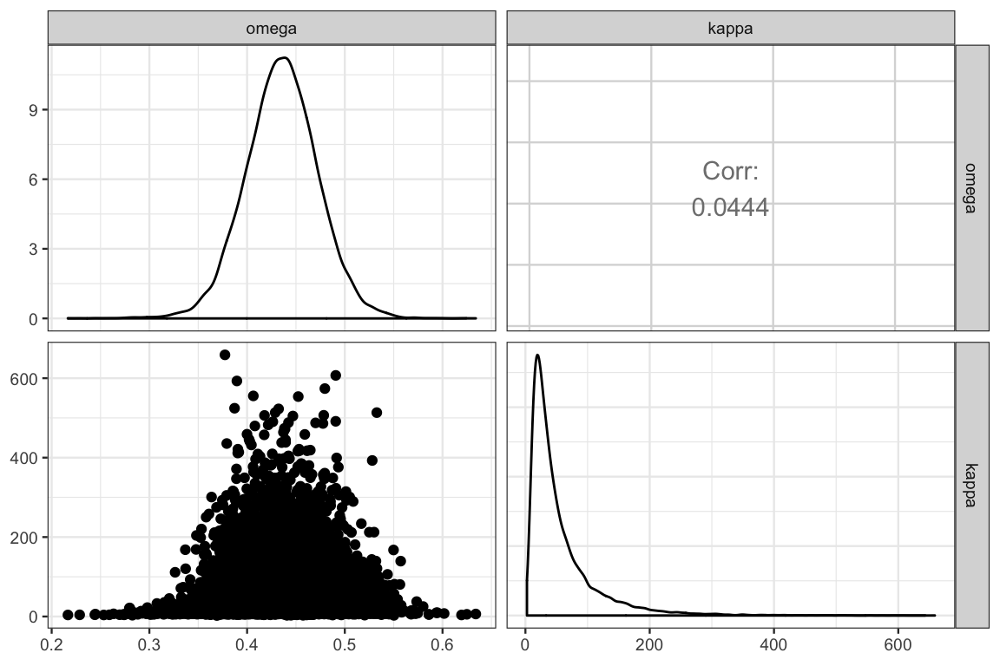
gf_point(kappa ~ omega, data = posterior(touch_jags), alpha = 0.05) %>%
gf_density2d(kappa ~ omega, data = posterior(touch_jags))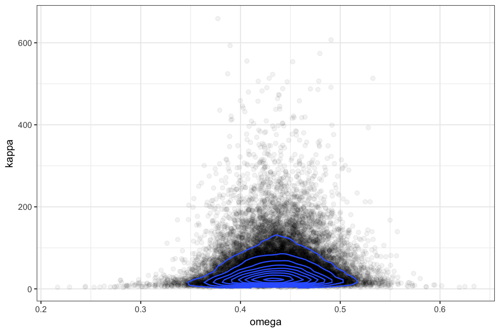
9.6 Other parameterizations we might have tried
9.6.1 Shape parameters for Beta
Suppose we decided to parameterize the beta distribution with shape parameters like this?
touch_model2 <- function() {
for (i in 1:Ntotal) {
y[i] ~ dbern(theta[s[i]])
}
for (s in 1:Nsubj) {
theta[s] ~ dbeta(alpha, beta)
}
kappa <- alpha + beta
mu <- alpha / (alpha + beta)
alpha <- alphaMinusOne + 1
beta <- betaMinusOne + 1
alphaMinusOne ~ dgamma(0.01, 0.01)
betaMinusOne ~ dgamma(0.01, 0.01)
}We’ll run it with the same options we used above to faciliate easy comparisons.
touch_jags2 <-
jags.parallel(
data = TouchData,
model = touch_model2,
parameters.to.save = c("theta", "alpha", "beta", "mu", "omega", "kappa"),
n.burnin = 1000,
n.iter = 41000,
n.chains = 5,
n.thin = 10,
jags.seed = 54321
) The resuls are disasterous: Rhat values well above 1 and effective sample sizes that are much smaller than before.
touch_jags2## Inference for Bugs model at "touch_model2", fit using jags,
## 5 chains, each with 41000 iterations (first 1000 discarded), n.thin = 10
## n.sims = 20000 iterations saved
## mu.vect sd.vect 2.5% 25% 50% 75% 97.5% Rhat
## alpha 19.586 23.261 1.000 4.833 12.099 24.854 89.225 2.300
## beta 24.922 29.869 1.000 6.200 15.476 31.857 110.226 2.411
## kappa 44.508 52.940 2.000 11.184 27.621 56.852 197.948 2.369
## mu 0.448 0.040 0.369 0.420 0.447 0.482 0.506 1.157
## theta[1] 0.322 0.120 0.056 0.247 0.344 0.409 0.509 1.708
## theta[2] 0.355 0.107 0.112 0.292 0.370 0.431 0.532 1.435
## theta[3] 0.391 0.098 0.172 0.333 0.399 0.455 0.567 1.210
## theta[4] 0.391 0.097 0.175 0.335 0.400 0.455 0.570 1.205
## theta[5] 0.392 0.098 0.176 0.335 0.401 0.457 0.571 1.196
## theta[6] 0.391 0.098 0.170 0.334 0.400 0.456 0.570 1.213
## theta[7] 0.392 0.097 0.176 0.335 0.399 0.455 0.571 1.188
## theta[8] 0.391 0.097 0.174 0.334 0.399 0.456 0.567 1.204
## theta[9] 0.391 0.098 0.171 0.333 0.400 0.455 0.568 1.212
## theta[10] 0.391 0.098 0.175 0.333 0.399 0.455 0.568 1.205
## theta[11] 0.427 0.094 0.233 0.370 0.428 0.484 0.621 1.066
## theta[12] 0.427 0.094 0.233 0.371 0.429 0.485 0.619 1.064
## theta[13] 0.427 0.094 0.231 0.370 0.428 0.484 0.619 1.073
## theta[14] 0.428 0.094 0.229 0.371 0.429 0.485 0.619 1.071
## theta[15] 0.427 0.094 0.230 0.370 0.429 0.483 0.616 1.070
## theta[16] 0.463 0.096 0.286 0.402 0.456 0.517 0.679 1.046
## theta[17] 0.463 0.096 0.285 0.403 0.456 0.517 0.676 1.044
## theta[18] 0.464 0.096 0.286 0.403 0.457 0.518 0.682 1.048
## theta[19] 0.462 0.096 0.282 0.401 0.456 0.517 0.678 1.049
## theta[20] 0.463 0.095 0.288 0.402 0.457 0.517 0.677 1.047
## theta[21] 0.462 0.097 0.283 0.401 0.456 0.516 0.682 1.045
## theta[22] 0.463 0.096 0.287 0.401 0.456 0.518 0.680 1.048
## theta[23] 0.499 0.104 0.325 0.429 0.485 0.554 0.747 1.134
## theta[24] 0.500 0.104 0.325 0.430 0.486 0.555 0.747 1.135
## theta[25] 0.533 0.117 0.353 0.452 0.512 0.597 0.814 1.280
## theta[26] 0.533 0.117 0.354 0.450 0.513 0.597 0.812 1.282
## theta[27] 0.533 0.118 0.353 0.451 0.512 0.597 0.819 1.289
## theta[28] 0.569 0.133 0.373 0.471 0.540 0.644 0.880 1.459
## deviance 378.572 5.644 367.282 374.715 378.780 382.457 389.202 1.034
## n.eff
## alpha 7
## beta 7
## kappa 7
## mu 27
## theta[1] 10
## theta[2] 14
## theta[3] 30
## theta[4] 30
## theta[5] 31
## theta[6] 30
## theta[7] 33
## theta[8] 30
## theta[9] 29
## theta[10] 31
## theta[11] 250
## theta[12] 260
## theta[13] 180
## theta[14] 220
## theta[15] 190
## theta[16] 260
## theta[17] 330
## theta[18] 270
## theta[19] 280
## theta[20] 260
## theta[21] 290
## theta[22] 280
## theta[23] 35
## theta[24] 35
## theta[25] 17
## theta[26] 17
## theta[27] 16
## theta[28] 12
## deviance 120
##
## For each parameter, n.eff is a crude measure of effective sample size,
## and Rhat is the potential scale reduction factor (at convergence, Rhat=1).
##
## DIC info (using the rule, pD = var(deviance)/2)
## pD = 15.4 and DIC = 394.0
## DIC is an estimate of expected predictive error (lower deviance is better).9.6.2 Mean instead of mode
This change seems less dramatic. Let’s see how using mean and concentraion compares to using mode and concentration.
touch_model3 <- function() {
for (i in 1:Ntotal) {
y[i] ~ dbern(theta[s[i]])
}
for (s in 1:Nsubj) {
theta[s] ~ dbeta(mu * kappa, (1 - mu) * kappa)
}
mu ~ dbeta(2, 2)
kappa <- kappaMinusTwo + 2
kappaMinusTwo ~ dgamma(0.01, 0.01)
}touch_jags3 <-
jags.parallel(
data = TouchData,
model = touch_model3,
parameters.to.save = c("theta", "mu", "kappa"),
n.burnin = 1000,
n.iter = 41000,
n.chains = 5,
n.thin = 10,
jags.seed = 54321
) This model seems to perform reasonably well.
touch_jags3## Inference for Bugs model at "touch_model3", fit using jags,
## 5 chains, each with 41000 iterations (first 1000 discarded), n.thin = 10
## n.sims = 20000 iterations saved
## mu.vect sd.vect 2.5% 25% 50% 75% 97.5% Rhat
## kappa 58.519 58.419 9.258 22.258 39.046 72.852 222.144 1.001
## mu 0.441 0.033 0.377 0.419 0.441 0.463 0.507 1.001
## theta[1] 0.364 0.087 0.174 0.310 0.373 0.425 0.514 1.001
## theta[2] 0.387 0.082 0.213 0.337 0.392 0.443 0.536 1.001
## theta[3] 0.409 0.078 0.248 0.360 0.412 0.460 0.558 1.001
## theta[4] 0.409 0.078 0.244 0.361 0.412 0.461 0.559 1.001
## theta[5] 0.409 0.079 0.241 0.360 0.412 0.461 0.557 1.001
## theta[6] 0.409 0.080 0.243 0.360 0.412 0.462 0.561 1.001
## theta[7] 0.409 0.079 0.242 0.360 0.412 0.461 0.560 1.001
## theta[8] 0.408 0.079 0.242 0.359 0.411 0.460 0.559 1.001
## theta[9] 0.409 0.079 0.244 0.360 0.413 0.461 0.562 1.001
## theta[10] 0.410 0.079 0.243 0.361 0.412 0.462 0.559 1.001
## theta[11] 0.432 0.078 0.276 0.382 0.432 0.481 0.589 1.001
## theta[12] 0.433 0.078 0.276 0.383 0.433 0.482 0.588 1.001
## theta[13] 0.431 0.077 0.274 0.382 0.432 0.480 0.584 1.001
## theta[14] 0.431 0.078 0.274 0.382 0.432 0.481 0.586 1.001
## theta[15] 0.431 0.078 0.276 0.383 0.431 0.480 0.590 1.001
## theta[16] 0.454 0.078 0.306 0.403 0.451 0.503 0.619 1.001
## theta[17] 0.455 0.078 0.307 0.404 0.452 0.503 0.619 1.001
## theta[18] 0.454 0.079 0.302 0.403 0.451 0.503 0.618 1.001
## theta[19] 0.455 0.077 0.309 0.405 0.452 0.503 0.617 1.001
## theta[20] 0.454 0.079 0.302 0.402 0.451 0.503 0.619 1.001
## theta[21] 0.454 0.078 0.300 0.404 0.452 0.502 0.616 1.001
## theta[22] 0.455 0.079 0.303 0.404 0.452 0.503 0.622 1.001
## theta[23] 0.477 0.082 0.329 0.422 0.471 0.526 0.657 1.001
## theta[24] 0.477 0.081 0.329 0.423 0.472 0.526 0.655 1.001
## theta[25] 0.500 0.086 0.352 0.441 0.491 0.551 0.692 1.001
## theta[26] 0.499 0.085 0.353 0.441 0.491 0.549 0.690 1.001
## theta[27] 0.498 0.084 0.350 0.441 0.491 0.549 0.685 1.001
## theta[28] 0.522 0.091 0.368 0.458 0.512 0.577 0.725 1.001
## deviance 379.246 5.135 368.618 375.817 379.516 382.831 388.728 1.001
## n.eff
## kappa 16000
## mu 8700
## theta[1] 18000
## theta[2] 20000
## theta[3] 17000
## theta[4] 15000
## theta[5] 19000
## theta[6] 20000
## theta[7] 12000
## theta[8] 11000
## theta[9] 20000
## theta[10] 20000
## theta[11] 13000
## theta[12] 9900
## theta[13] 12000
## theta[14] 20000
## theta[15] 20000
## theta[16] 13000
## theta[17] 20000
## theta[18] 18000
## theta[19] 20000
## theta[20] 15000
## theta[21] 6200
## theta[22] 17000
## theta[23] 20000
## theta[24] 20000
## theta[25] 20000
## theta[26] 20000
## theta[27] 20000
## theta[28] 12000
## deviance 20000
##
## For each parameter, n.eff is a crude measure of effective sample size,
## and Rhat is the potential scale reduction factor (at convergence, Rhat=1).
##
## DIC info (using the rule, pD = var(deviance)/2)
## pD = 13.2 and DIC = 392.4
## DIC is an estimate of expected predictive error (lower deviance is better).TouchData0 <- list(
Ntotal = 0,
Nsubj = length(unique(TherapeuticTouch$s)),
# y = TherapeuticTouch$y,
# must convert subjects to sequence 1:Nsubj
s = as.numeric(factor(TherapeuticTouch$s))
)So why do we prefer the mode to the mean? Let’s take a look at the prior distribution on one of the \(\theta\)s.
touch_jags_prior <-
jags.parallel(
data = TouchData0,
model = touch_model,
parameters.to.save = c("theta", "kappa", "omega"),
n.burnin = 1000,
n.iter = 41000,
n.chains = 5,
n.thin = 10,
DIC = FALSE,
jags.seed = 54321
) touch_jags_prior3 <-
jags.parallel(
data = TouchData0,
model = touch_model3,
parameters.to.save = c("theta", "kappa", "mu"),
n.burnin = 1000,
n.iter = 41000,
n.chains = 5,
n.thin = 10,
DIC = FALSE,
jags.seed = 54321
) gf_dens( ~ theta.1, data = posterior(touch_jags_prior), color = ~"mode") %>%
gf_dens( ~ theta.1, data = posterior(touch_jags_prior3), color = ~"mean") 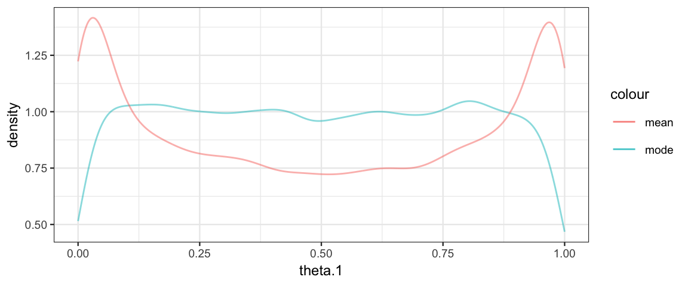
Using the mean rather than mode corresponds to an unfortunate prior on \(\theta_i\).